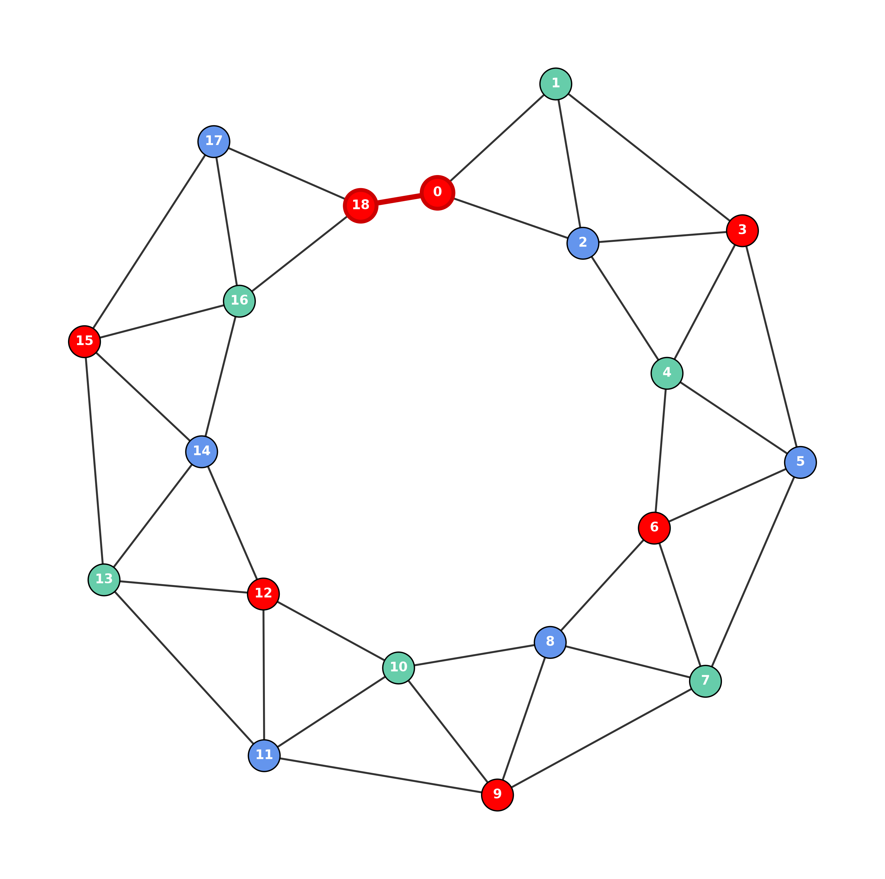

В 1977 году Кеннет Аппель и Вольфганг Хакен объявили о доказательстве теоремы о четырёх красках. Их доказательство опиралось на компьютерный перебор: программа проверила около 1936 конфигураций и показала, что каждая из них «неизбежна» и «редуцируема». С тех пор это доказательство многократно проверялось и уточнялось (Робертсон, Сандерс, Сеймур, Томас, 1997), но его методологическая основа осталась той же: конечный список структур, найденных перебором, и утверждение, что этот список покрывает все возможные случаи.
Я не верю в это доказательство. Не потому, что сомневаюсь в самой теореме — она, скорее всего, верна. А потому, что метод поиска структур принципиально неполон. И вот почему.
Компьютерный перебор 1970-х годов искал структуры, которые должны встречаться в любом планарном графе, требующем пятого цвета. Но алгоритмы генерации графов, которые при этом использовались, не были случайными в полном смысле слова. Они были одинаковы по методу построения: брались некоторые базовые конфигурации, к ним применялись локальные операции, и проверялось, не появится ли структура, которую можно редуцировать.
Такая генерация не может породить структуры определённого типа — те, которые возникают не из локальных комбинаций, а из глобальной цепочки вынужденности, протянутой через весь граф. Вероятность случайно получить такую цепочку экспоненциально мала и стремится к нулю с ростом числа вершин.
В моём доказательстве (см. теорию) центральное понятие — цепочка вынужденности. Это последовательность треугольников, соединённых по общим рёбрам, которая вынуждает вершины принимать строго определённые цвета. Когда цепочка замыкается, возникает конфликт: структура графа требует одного, а цепочка вынуждает другое. Этот конфликт невозможно разрешить тремя цветами — нужен четвёртый.
\(K_4\) и нечётные звёзды — это частные случаи цепочки вынужденности. Но общий случай гораздо богаче. Цепочка может проходить по всему графу, не имея выделенного центра, и её длина может быть сколь угодно большой.
На рисунке ниже — конкретный граф из 19 вершин, который является одной большой цепочкой вынужденности.

Как он устроен:
Попробуйте раскрасить этот граф тремя цветами. Вы обнаружите, что это невозможно: на последнем шаге возникает противоречие. Но если перекрасить любую одну вершину в четвёртый цвет — цепочка рассыпается, и граф становится 3-раскрашиваемым.
Этот граф:
И таких графов — бесконечно много. Ничего не мешает построить такую же цепочку из 3 000 019 вершин. Или из \(10^{100}\) вершин. Каждая из них будет контрпримером к утверждению, что конечный список из ~2000 структур, найденных компьютерным перебором, покрывает все возможные случаи.
Теорема о четырёх красках, скорее всего, верна. Но её классическое доказательство не является доказательством в строгом смысле: оно показывает, что данный конкретный список структур покрывает все случаи, но не показывает, что другие структуры не могут существовать. Мой контрпример демонстрирует, что они существуют — и что их бесконечно много.
Конструктивное доказательство, представленное на этом сайте, предлагает альтернативу: вместо перебора структур — явный алгоритм, который работает с любой цепочкой вынужденности, включая те, которые компьютерный перебор никогда бы не нашёл.
Даже новейшие работы 2026 года подтверждают это ограничение. В статье Inoue, Kawarabayashi, Miyashita, Mohar, Thomassen, Thorup (arXiv:2603.24880) авторы усиливают метод Аппеля–Хакена: они показывают, что можно найти линейное число редуцируемых конфигураций, а не одну, и получают алгоритм 4-раскраски за \(O(n \log n)\) вместо квадратичного. Это крупный результат. Но при этом они прямо признают: «Такой алгоритм не может быть достигнут известными доказательствами теоремы о четырёх красках» — то есть старый метод имел структурные ограничения. Более того, их поиск по-прежнему остаётся локальным: они ищут конфигурации ограниченного диаметра и «плоские» области с нулевой кривизной. Мой контрпример — это глобальная цепочка вынужденности, протянутая через весь граф. Она не сводится к конечному списку локальных конфигураций, и именно поэтому остаётся вне рамок любого метода, основанного на таком списке — даже расширенного до 8202 конфигураций.
Полный текст доказательства доступен в препринте на Zenodo:
📄 Читать полную статью (PDF, Zenodo)In 1977, Kenneth Appel and Wolfgang Haken announced a proof of the Four Color Theorem. Their proof relied on a computer search: the program checked about 1,936 configurations and showed that each of them is "unavoidable" and "reducible." Since then, the proof has been repeatedly verified and refined (Robertson, Sanders, Seymour, Thomas, 1997), but its methodological foundation remains the same: a finite list of structures found by search, and the claim that this list covers all possible cases.
I do not believe in this proof. Not because I doubt the theorem itself — it is most likely true. But because the method of searching for structures is fundamentally incomplete. Here is why.
The computer search of the 1970s looked for structures that must appear in any planar graph requiring a fifth color. But the graph generation algorithms used were not random in the full sense. They were identical in their construction method: some base configurations were taken, local operations were applied, and a check was made whether a reducible structure had appeared.
Such generation cannot produce structures of a certain type — those that arise not from local combinations, but from a global forced chain stretched across the entire graph. The probability of randomly obtaining such a chain is exponentially small and tends to zero as the number of vertices grows.
In my proof (see theory), the central concept is the forced chain. It is a sequence of triangles connected by common edges that forces vertices to take strictly defined colors. When the chain closes, a conflict arises: the graph structure requires one thing, and the chain forces another. This conflict cannot be resolved with three colors — a fourth is needed.
\(K_4\) and odd stars are special cases of the forced chain. But the general case is much richer. A chain can traverse the entire graph without having a distinguished center, and its length can be arbitrarily large.
The figure below shows a specific graph with 19 vertices that is one large forced chain.
How it is built:
Try to color this graph with three colors. You will find that it is impossible: at the last step, a contradiction arises. But if you recolor any single vertex with the fourth color — the chain falls apart, and the graph becomes 3-colorable.
This graph:
And there are infinitely many such graphs. Nothing prevents building the same chain from 3,000,019 vertices. Or from \(10^{100}\) vertices. Each of them will be a counterexample to the claim that a finite list of ~2,000 structures found by computer search covers all possible cases.
The Four Color Theorem is most likely true. But its classical proof is not a proof in the strict sense: it shows that this particular list of structures covers all cases, but does not show that other structures cannot exist. My counterexample demonstrates that they do exist — and that there are infinitely many of them.
The constructive proof presented on this site offers an alternative: instead of searching for structures — an explicit algorithm that works with any forced chain, including those that a computer search would never find.
Even the newest work from 2026 confirms this limitation. In the paper by Inoue, Kawarabayashi, Miyashita, Mohar, Thomassen, Thorup (arXiv:2603.24880), the authors strengthen the Appel–Haken method: they show that one can find a linear number of reducible configurations, not just one, and obtain a 4-coloring algorithm in \(O(n \log n)\) time instead of quadratic. This is a major result. But they explicitly acknowledge: “Such an algorithm cannot be achieved by the known proofs of the Four Color Theorem” — that is, the old method had structural limitations. Moreover, their search remains local: they look for configurations of bounded diameter and “flat” regions with zero curvature. My counterexample is a global forced chain stretched across the entire graph. It does not reduce to a finite list of local configurations, and that is precisely why it remains outside the scope of any method based on such a list — even one extended to 8,202 configurations.
The full proof is available in the preprint on Zenodo:
📄 Read the full paper (PDF, Zenodo)